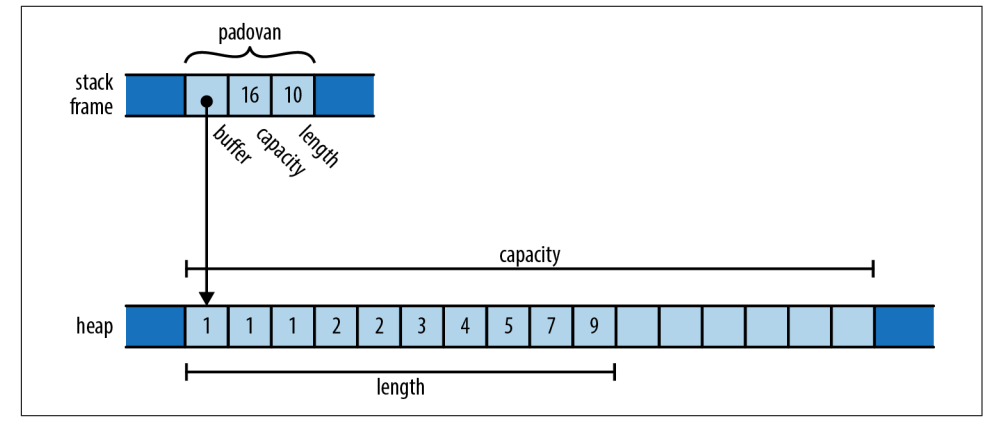
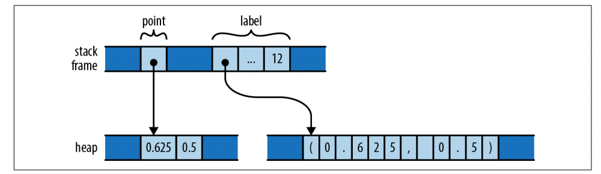
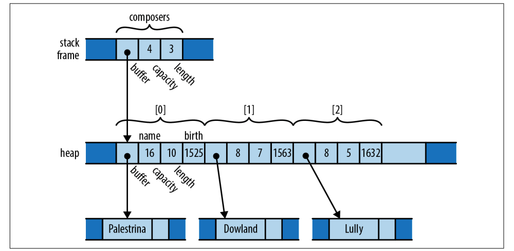
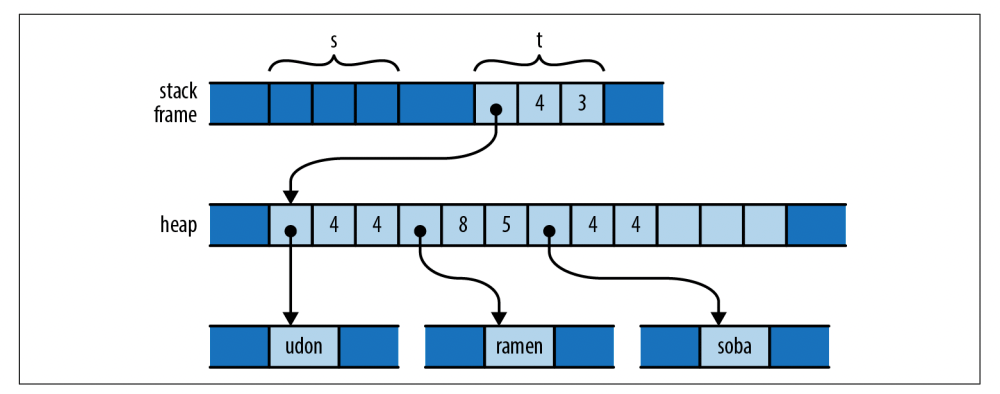
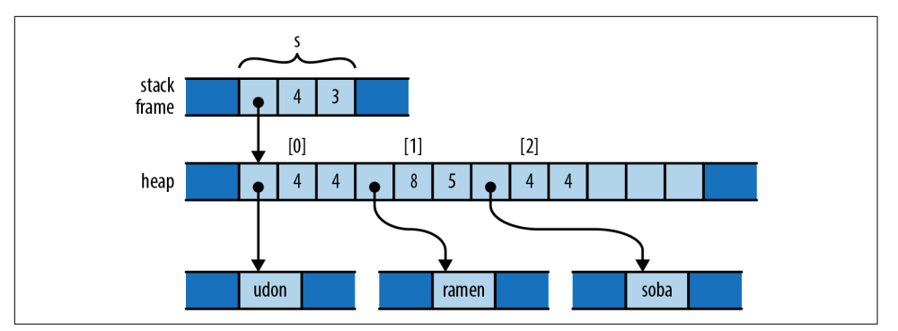
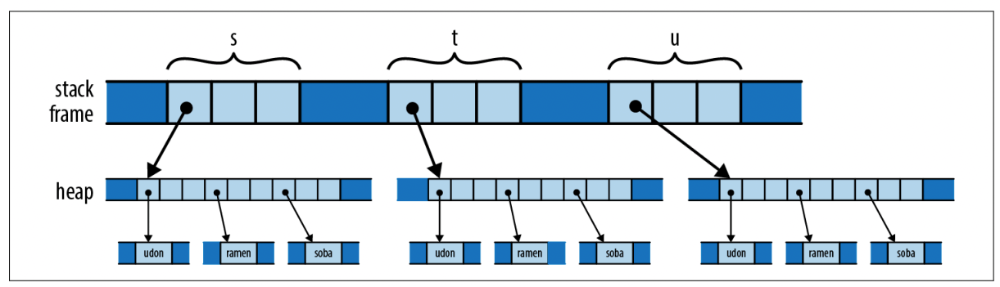
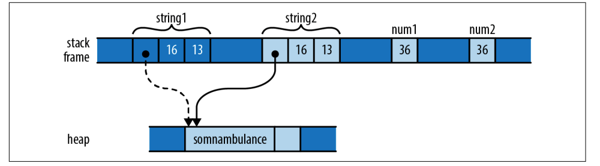
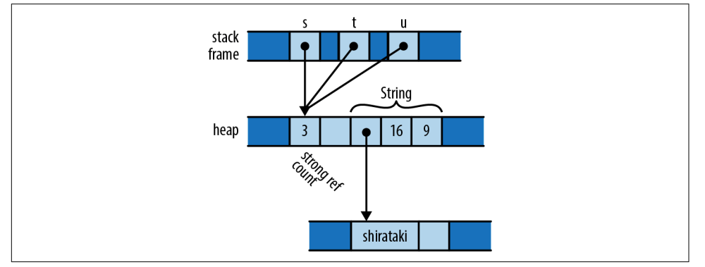

【Rust】所有权
在编程语言的内存使用中，我们经常遇到什么时候释放内存以及如何确定访问的内存是否已被释放等问题。对于内存管理方式，存在着两大阵营：
-
一种是以
Python，JavaScript，Ruby，Java，C#，以及Go等为代表的拥有垃圾回收器的语言，垃圾回收器在对象不再被访问时，会释放对象所持有的内存。这种方式对开发者友好，因为我们不用太多关心内存的申请和释放，但是这意味着将对象释放的权利交给了垃圾回收器，对于理解什么时候释放内存会是一个较大的挑战。 -
另一种是以
C和C++为代表的语言，它们将内存的申请和回收完全交给了开发者，这造成过很多致命的问题，悬垂指针，访问已释放内存以及多重释放等问题；
Rust旨在既安全又高效，因此这两种方案都不能接受，但如果有更好的方案，估计早就有人做了。Rust 通过限制程序使用指针的方式打破了这种非得妥协的僵局。Rust的做法激进，但这成了它成功的基础，尽管有诸多限制，但使用起来依然足够灵活。
所有权
在 Rust 中，所有权的概念根植于语言自身并且由编译器在编译时检查。每个值都有一个决定其生死的所有者，当这个所有者被释放（在 Rust 中，称为 Drop）时，它所拥有的值占用的的内存也会被释放。
每个变量都有一个值，当变量离开它的作用域时，就会被 drop，它拥有的值也会被从内存中释放。
1 | fn print_padovan() { |
变量 padovan 的类型是 Vec<i32>，在内存中，它的值看起来像下面这样，padovan 的指针，容量和长度分配在函数 print_padovan 的栈帧上，只有 vector 的缓冲池是在堆上分配的：

Rust 的 Box 类型是所有权的另一个代表。Box<T> 是存储在堆上的 T 类型值的指针。调用 Box::new(v) 分配一些堆空间，将值v移动到其中，并返回包含指向堆内存指针的 Box。由于Box拥有它指向的空间，当 Box 离开作用域时，它也会释放相应的堆内存。例如：
1 | { |
当程序调用 Box::new 时，它会在堆上为两个f64值的元组分配空间，将(0.625，0.5)移动到该空间中，并返回指向它的指针。当程序运行到assert_eq!时，栈帧如下图所示：

来看一个结构体的例子，结构体字段也可以是 String，Array 或者 Vector 等：
1 | struct Person { |
composers 的类型是 Vec<Person>，它在内存中的表示如下图所示：

这里有很多所有权关系，但每个关系都非常简单：composers 拥有一个 vector，vector 拥有它的元素，每个元素都是 Person 结构体，每个结构体都拥有自己的字段，name 字段拥有其文本。当composers离开作用域时，程序会释放掉所有堆上分配的内存。
从上面的示例来看，每个值都有一个所有者，所有者离开作用域值被释放。为了对开发友好，Rust 的所有权概念有一些变通：
-
值的所有者可以进行转移；
-
简单的整数，浮点数，字符这些类型不受所有者规则约束，它们在参数传递，重新赋值时会进行拷贝，它们实现了
Copy； -
标准库提供了引用计数类型
Rc和Arc，允许值在某些规则下可以有多个所有者； -
可以借用值的引用，引用不改变值的所有者；
所有权转移
在 Rust 中，赋值类操作，比如传递值给变量，或者从函数返回都不会复制值，仅仅是把值的所有权从一个变量转向另一个变量。来看一个例子说明值的所有权是如何转移的，而且在不同的语言中都是如何处理，我们对比 Python，C++ 以及 Rust：
1 | fn main() { |
当 s 初始化的时候，我们看到的是s拥有这个值，它的值的所有者：
但是在将 s 赋值给 t 之后，我们看到值的所有权转移了：

但是在将 s 赋值给 t 之后，值得所有权从 s 转移到了 t，成了 vector 新的主人，这段代码在运行时会报如下的错误:
error[E0382]: use of moved value: `s`
--> src/main.rs:5:12
|
3 | let s = vec!["udon".to_string(), "ramen".to_string(), "soba".to_string()];
| - move occurs because `s` has type `Vec<String>`, which does not implement the `Copy` trait
4 | let t= s;
| - value moved here
5 | let u= s;
| ^ value used here after move
所以说这里将 s 赋值给 t，操作使很轻量的，没有内存的复制，只是值的所有权的转移。如果我们要实现内存的复制，我们需要对值进行 clone：
1 | fn main() { |
1 | s = ['udon', 'ramen', 'soba'] |
对于类似的代码，我们可以对比在python语言中，s初始化的时候，和值s赋值给t和u时的内存布局：
Python 的实现是将指针从s复制到t和u，并且更新列表对象的引用计数。
我们来看 C++ 中的代码：
1 | using namespace std; |
s 新创建的时候，内存布局如下图所示:

在将 s 赋值给 t 和 u 之后如下图所示，可见C++实现了内存的复制:

在通过 let 语句将值赋值给已经初始化的变量时，变量先前拥有的值将会被释放掉，例如：
1 | let mut s = "Govinda".to_string(); |
但是如果在给s重新赋值之前，将原先拥有的Govinda转移给另外的变量t，再赋值 Siddhartha 时，s 是未初始化状态，所以就不会释放任何值：
1 | let mut s = "Govinda".to_string(); |
除了赋值之外，函数参数传递，从函数返回值以及构建结构体或者 tuple，都会涉及到所有权的转移。下面这段代码展示了这几种情况：
1 |
|
-
从函数返回值：
Vec::new()构造了一个新的vector并且返回，不是指向vector的指针，而是vector本身。它的所有权从Vec::new转移给了变量composers。类似，to_string也返回了一个新的String； -
构造结构体或者
tuple：Person的name字段使用to_string方法返回了一个String，因此这个结构体现在拥有这个String的所有权； -
传值到函数：整个
Person结构体，传递给了vector的push方法，vector拥有了Person的所有权，间接拥有了Palestrina的所有权；
当一个变量拥有的值转移到其他变量，或者函数之后，原先的变量就会变得未初始化，在重新初始化之前是不能使用的。
在控制流中要尤其注意：
1 | let x = vec![10, 20, 30]; |
所有权转移和索引
move 会让值的原所有者变得未初始化，因为它的所有者换人了，但不是所有类型的值都会这样。
例如，这段代码无法正常编译：
1 | fn main() { |
试图运行此段代码会遇到下面的错误:
--> src/main.rs:9:17
|
9 | let third = v[2]; // error: Cannot move out of index of Vec
| ^^^^
| |
| move occurs because value has type `String`, which does not implement the `Copy` trait
| help: consider borrowing here: `&v[2]`
理解这里为什么不能编译其实也很简单，站在编程语言的角度，如果允许这样做，那么 vector 就需要记录哪些元素是活着的，哪些元素被 move 而变得未初始化。根据错误提示，我们可以用一个引用。
但是如果我们确实想获取 vector 中一些元素的所有权，我们可以使用一些方法：
1 | fn main() { |
类似 Vec 的集合类方法也提供了用于消费它们中的元素的方法，当我们直接将 vector 传递给 for 语句时，实际上我们已经将 v 的所有权转移了，v 处于未初始化状态，下面这段代码也是不能编译的。
1 | fn main() { |
根据编译器提示是由于隐式调用了 into_iter 方法，vector 的所有权被转移，v 已经变成未初始化状态：
error[E0382]: borrow of moved value: `v`
--> src/main.rs:11:22
|
2 | let v = vec![
| - move occurs because `v` has type `Vec<String>`, which does not implement the `Copy` trait
...
7 | for mut s in v {
| - `v` moved due to this implicit call to `.into_iter()`
...
11 | println!("{:?}", v);
| ^ value borrowed here after move
|
for 循环运行过程中，它会获取 vector 的所有权，并且在每次迭代的过程中将它赋值给 s。
Copy 类型的所有权转移
本节到目前为止，所展示的所有权转移示例示例涉及 vector、字符串等这些类型可能会占用大量内存的类型，并且复制成本高昂，通过 move 转移值的所有权会使操作成本低廉。但对于整数或字符等更简单的类型，这种出于成本的考虑就没有必要了。我们来看下面这段代码就能看到他们之间的差别：
1 | fn main() { |
字符串类型会执行所有权转移的策略，而对于简单类型，则是采取复制策略：

实际上，在处理 Copy 类型时，是复制值而不是 move，标准的 Copy 类型包括了所有的整数，浮点数，char，bool 类型以及大小固定的数组或者tuple，或者说可以按 bit 复制的类型都能被 Copy，String 由于包含一个堆中的缓冲池，所以不允许 Copy，Box<T> 类似。而 File类型包含了一个操作系统的文件句柄，所以也不能 Copy。还有例如 MutexGuard 互斥锁类型，复制是没有意义的，并且只能由一个线程持有。
根据经验，当值被删除时需要做一些特殊事情的任何类型都不能复制：Vec 需要释放其元素，File 需要关闭句柄，MutexGuard 需要解锁，这种类型的位按bit复制将会导致谁拥有原始的资源不清晰。
默认情况下，自定义的类型是不能复制的，所以我们自己定义的结构体或者枚举都不满足复制条件。例如下面这段代码会编译失败：
1 | fn main() { |
原因是 Label 不能 Copy，在调用 print 函数的时候，l 拥有的值已经被转移，在调用结束之后被释放掉：
error[E0382]: borrow of moved value: `l`
--> src/main.rs:13:40
|
11 | let l = Label { number: 3 };
| - move occurs because `l` has type `Label`, which does not implement the `Copy` trait
12 | print(l);
| - value moved here
13 | println!("My label number is: {}", l.number);
| ^^^^^^^^ value borrowed here after move
|
但是这个设计看起来很蠢，因为我们结构体里面的都是基本类型。如果我们想这样做，并且结构体内部所有字段都是可复制的，那么我们可以通过 #[derive(Copy, Clone)] 来标记我们的结构体，这样就上面的代码就可以编译通过了：
1 | fn main() { |
但是如果我们的结构体内部包含 String 字段，还是会编译失败，原因是 String 类型没有实现 Copy，不能复制：
1 | fn main() { |
error[E0204]: the trait `Copy` may not be implemented for this type
--> src/main.rs:2:14
|
2 | #[derive(Copy, Clone)]
| ^^^^
3 | struct Label {
4 | name: String,
| ------------ this field does not implement `Copy`
|
复制类型更灵活，因为他不会导致值原来的所有者处于未初始化状态。但是这对于一个类型的开发者来说恰好相反，更希望类型的负影响更小，而且 Copy 类型可以包含的类型非常有限，非复制类型可以使用堆分配内存并且拥有其他类型。
Rc 和 Arc：共享所有权
尽管在 Rust 中，大多数情况下，每个值都拥有唯一的所有者，但是在某些情况下，我们可能希望某个值在所有人都不用的情况下再去释放它。为了应对这种情况，Rust 提供了 Rc 和 Arc 两种引用计数类型。Rc 和 Arc(Atomic Reference Count) 的唯一区别是，Arc 是线程安全的，支持多线程，但是性能有影响，所以，如果不需要线程共享，应该使用 Rc。
我们来看下面这个示例，和 Python 很像，对于任何类型 T，Rc<T> 和 Arc<T> 的值是一个指向堆内存的指针和一个引用计数。clone 操作不会复制 T，而是简单地创建一个指针指向堆中的内存，并且增加引用计数。
1 | use std::rc::Rc; |
这段代码的内存布局如下图所示，这里的 s，t，u 都指向了相同的内存块，当它们的最后一个离开作用域时，堆中的内存被释放掉：

可以直接使用 T 类型的方法，这里我们可以用 String 的方法：
1 | use std::rc::Rc; |
但是 Rc<T> 持有的指针是不可变的，所以我们不能更改所包含的字符串：
1 | s.push_str(" noodles"); |
这段代码在编译时会出现错误：
error[E0596]: cannot borrow data in an `Rc` as mutable
--> src/main.rs:11:5
|
11 | s.push_str(" noodles");
| ^^^^^^^^^^^^^^^^^^^^^^ cannot borrow as mutable
|
= help: trait `DerefMut` is required to modify through a dereference, but it is not implemented for `Rc<String>`
这是因为 Rust 的内存安全策略是：共享可读和可修改只能同时存在一个，而 Rc 就是为了多人共享而存在。